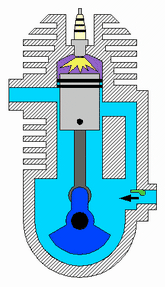
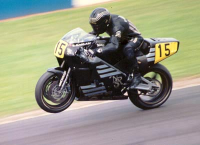

In 1950 in London, England, there was a group of young rockers--rock music lovers--who poured their hobbies and looked different with motorbikes. They want to create a new trend of motorcycle modification which is now known as the cafe racer flow.
Noted for its visual minimalism, a 1960s café racer would typically be an English parallel twin motorcycle with low-mounted clip-on or "Ace" handlebars with rear-set footrests. Items considered "non-essential" such as side panels, rear chain enclosures and voluminous mudguards (aka "fenders") were replaced by lighter items, or dispensed with altogether.[2]
Café racer styling evolved throughout the time of their popularity. By the mid-1970s, Japanese bikes had overtaken British bikes in the marketplace, and the look of real Grand Prix racing bikes had changed.
Increasingly, Kawasaki's three-cylinder two-stroke four-stroke Kawasaki Z1's four-cylinder, and Honda's four-cylinder engines became the basis for the café racer conversion.
Two Stroke
Four Stroke

a number of manufacturers had taken notice of the café racer boom and were producing factory café racers, such as the well-received Moto Guzzi Le Mans[20] and the Harley-Davidson XLCR.
The Japanese domestic market started making cafe racer replicas in the early 1980s, first Honda with the GB250 in 1983, then GB400 and GB500 versions in 1985. The GB400TTMKII has a frame mounted fairing and single seat with cowl. The Honda GB500 TT, sought to emulate BSA and Norton café racers of the 1960s.[24] Markets outside got the XBR500 in 1985, with more angular modern styling to compete with the Yamaha SRX600, until Honda USA released a version of the GB500 in 1989.
Honda GB 500 TT
Norton
Major manufacturers, such as BMW, Norton, Ducati and Yamaha, have responded to consumer interest in ready-to-ride café racers[37] and have exploited this niche market. Triumph produced a turn-key retro motorcycle with their Thruxton R. Another modern cafe racer is the Ducati SportClassic, made from 2006 till 2009. The café racer influence is apparent in the design of some electric motorcycles, for example, the TC model of Super Soco is commonly referred to as a café racer.[38] Modern stock café racers from motorcycle factories include:[39][40]
BMW R NineT Racer
Ducati Scarmbler caferacer
Yamaha XSR900